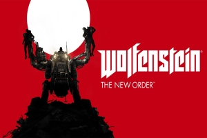

Home
Games
Over deze site
Suggesties
Wolfenstein

Wolfenstein : The new Order
Europa, 1946. De Tweede Wereldoorlog is woedt in Europa. Waar eens de geallieerden het voordeel hadden, Draaiden de nazi's het tij om ...
Wolfenstein
Het speelt zich af in het fictieve stadje "Isenstadt" tijdens de Tweede Wereldoorlog, waar de nazi's de macht hebben gegrepen om de zeldzame ...
Wolfenstein : Enemy Territory
Wolfenstein: Enemy Territory is een gratis en open source multiplayer first-person shooter tijdens de Tweede wereldoorlog ...
Return to castle Wolfenstein
In Return to Castle Wolfenstein speelt de speler als Amerikaanse soldaat die de naam William Joseph "B.J." Blazkowicz draagt. Deze wordt ook Agent two genoemd. Het verhaal speelt zich af in de Tweede Wereldoorlog.